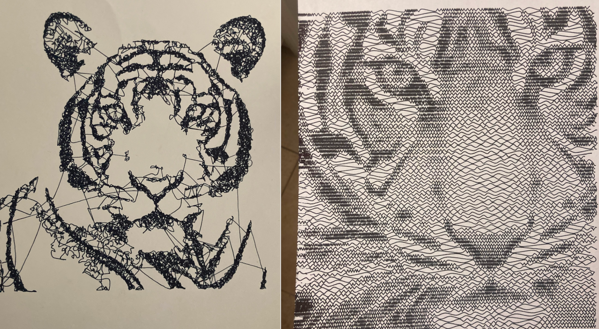
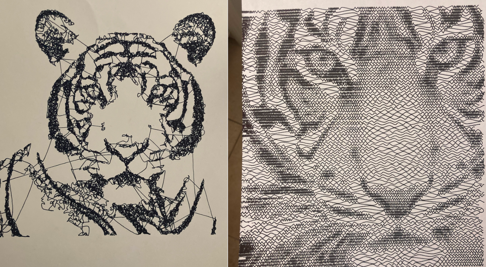

Generative Art
Metaball Procedural Animation

This piece was generated using a superposition of several metaball functions constrained within a 3D volume. The lines that make up the animation are rendered by evaluating the metaball functions across XZ planes at regular Y axis intervals using the marching squares algorithm to outline the functions at a particular threshold value. The animation consists of moving the centers of the metaball functions according to a basic physics simulation with random initial conditions. The paper-like texture of the animation is done by distorting the pixels with biased random noise and by applying the gradients of a paper image to each frame.
Transitions
This animation was done using a ray marching algorithm on signed distance functions and is an experiment in procedurally generated visual transitions. The entire animation is generated by a GLSL fragment shader running in real time.
Looping Cubes

This piece was generated using a ray marching algorithm on signed distance functions to render and animate a set of cubes. The goal was to generate a perfectly looping video that is created by the seemingly endless hierarchy of cubes moving towards the camera. The entire animation is generated from a GLSL fragment shader running in real time on a quad that represents the screen.
Original Project WebsitePen Plotter
I built a pen plotter using the open source firmware and build specifications of a Makelangelo plotter. The machine consists of just two stepper motors that drive a pan carriage via a toothed belt and an Arduino Mega microcontroller that controls the motor driver boards. It is a vertical plotter design that relies on gravity to keep tension on the belts. The plotter is able to process and recreate any 2D vector graphic in SVG format using a marker or pen on paper.
SVG Generation Programs
I wrote two programs that generate the SVG files that the plotter uses from input images. The first of these programs creates a scribble-like representation of the image by having an agent perform a semi-random walk guided by the image data. At each stage of the random walk the agent randomly chooses from a set of candidate steps weighted by the image darkness of the respective pixels at those locations. A quadratic Bezier curve is used to represent the agent path rather than straight lines to create a more hand drawn effect. The result is a SVG file consisting of a single curved line that closely matches the distribution of the image intensity.
The second program I wrote for the pen plotter divides the image up into rows and creates a representation of each row as a sinusoidal wave of varying frequency. Higher frequency portions of the sine wave represent darker pixels while lower frequency sections represent lighter pixels. The result is an interesting representation of the image that is able to preserve more of the image detail compared to the scribble representation.
 

Physarum Slime Mold Simulation
This program runs a simulation with tens of thousands of agents in real time using a compute shader. Each agent both influences and has its movement influenced by the enviornment which allows for structured pattern to form. In addition to implementing this base simulation I also experimented with having each agent's movement get affected by a reference image. This creates structure in the simulation output that closely resembles the reference image while still maintaining the effect of the base simulation.